Skutočné fotografie z Wikimedia Commons. Obrázky môžu byť zmenšené pre web; obsah nie je prefarbovaný ani generovaný.
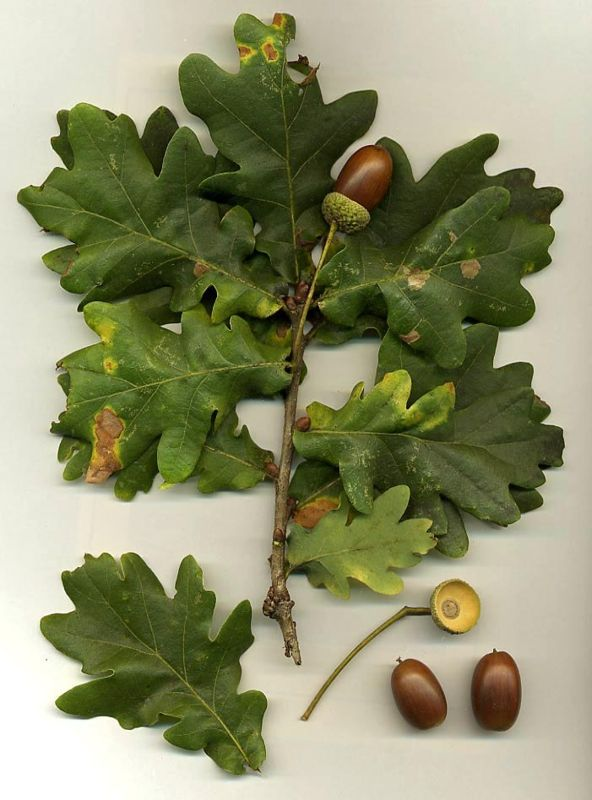
File:Quercus robur.jpg
Autor: MPF (en.wikipedia.org) · CC BY-SA 3.0 · Originál a licencia
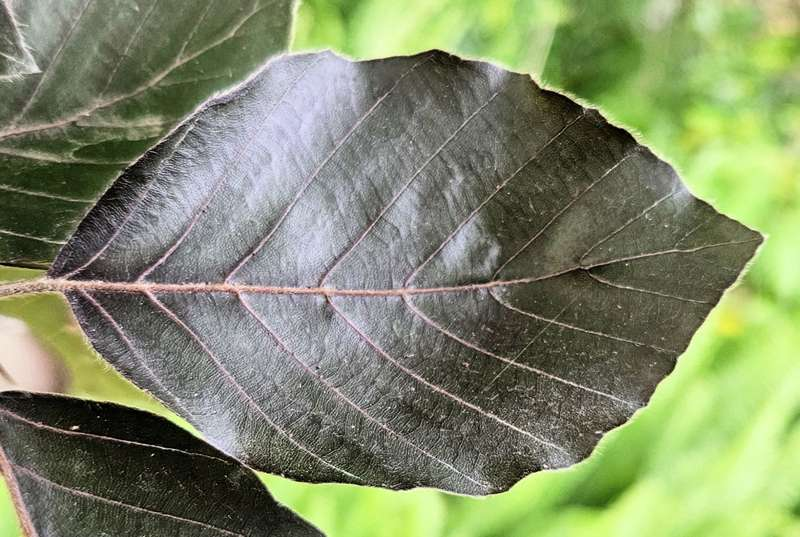
File:Fagus sylvatica single leaf - HLABG.png
Autor: Eric Polk · CC BY-SA 4.0 · Originál a licencia
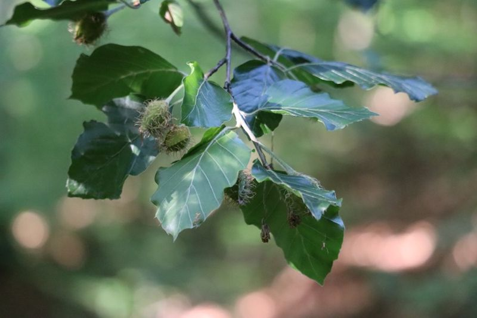
File:Fagus sylvatica seeds.jpg
Autor: Mirek256 · CC BY-SA 4.0 · Originál a licencia
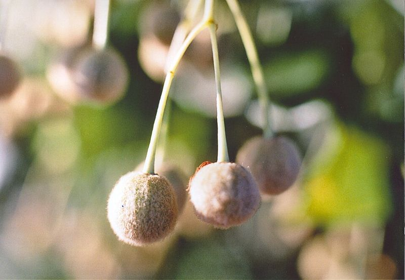
File:Tilia cordata fruit leaves under a microscope.jpg
Autor: Gustamons · CC0 · Originál a licencia
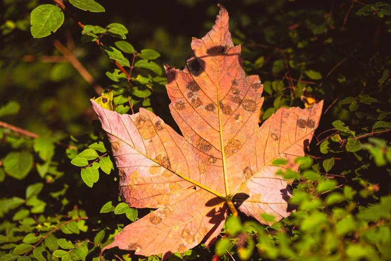
File:20210923 Acer platanoides Leave 01.jpg
Autor: Flocci Nivis · CC BY 4.0 · Originál a licencia
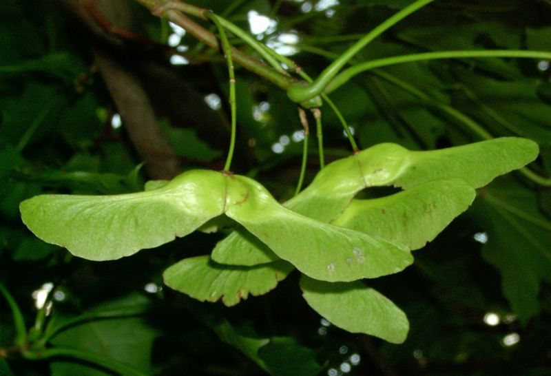
File:Acer platanoides fruit kz.jpg
Autor: Krzysztof Ziarnek · CC BY-SA 3.0 · Originál a licencia
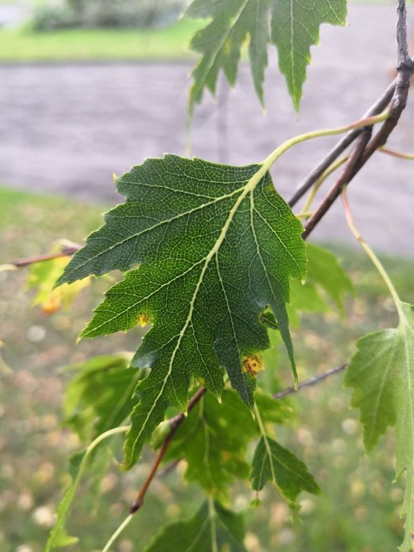
File:Betula pendula laciniata speciae nova 2.jpg
Autor: SamiKullström · CC0 · Originál a licencia
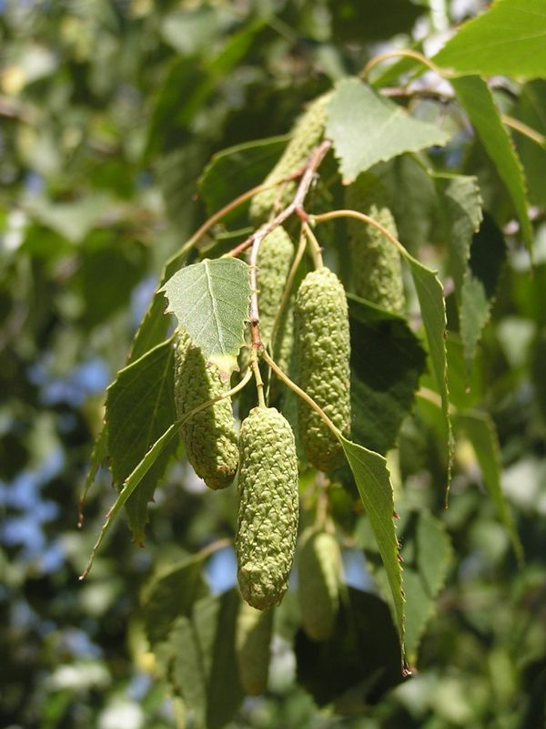
File:Betula pendula in Sedovo 1.jpg
Autor: Andrey Butko · CC BY-SA 3.0 · Originál a licencia
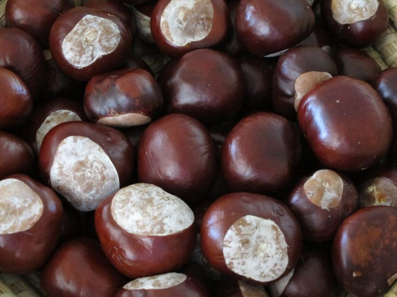
File:Aesculus hippocastanum fruit 01.jpg
Autor: Zeitblick · CC BY-SA 4.0 · Originál a licencia
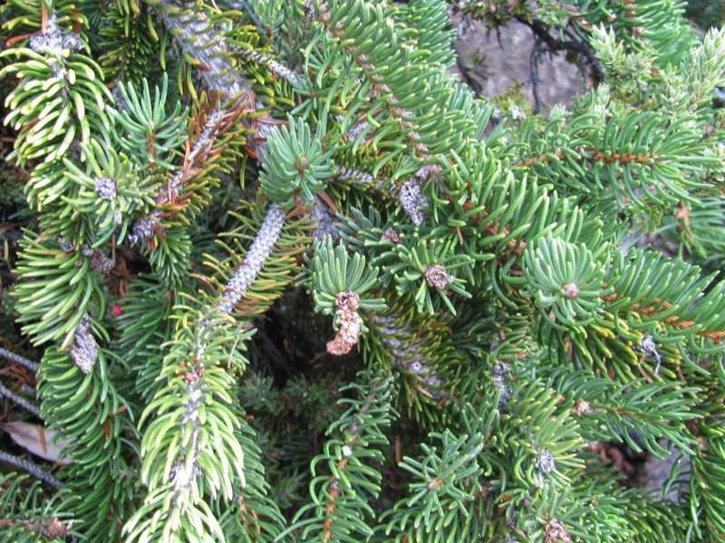
File:Starr-141106-5361-Picea abies-needles-8500 Ft Grove HNP-Maui (25130476492).jpg
Autor: Forest and Kim Starr · CC BY 3.0 us · Originál a licencia
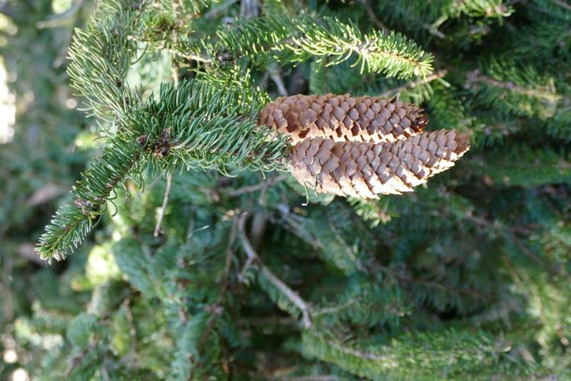
File:Picea abies cones at Munich Waldfriedhof.jpg
Autor: Kritzolina · CC BY-SA 4.0 · Originál a licencia
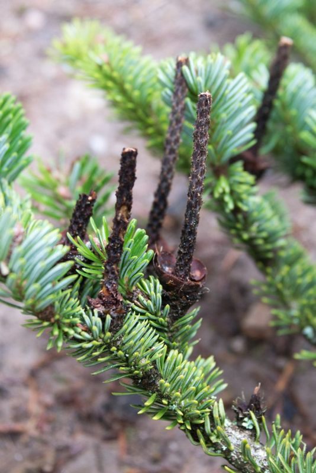
File:Cônes désarticulés abies alba.jpg
Autor: Moinats · CC BY-SA 4.0 · Originál a licencia
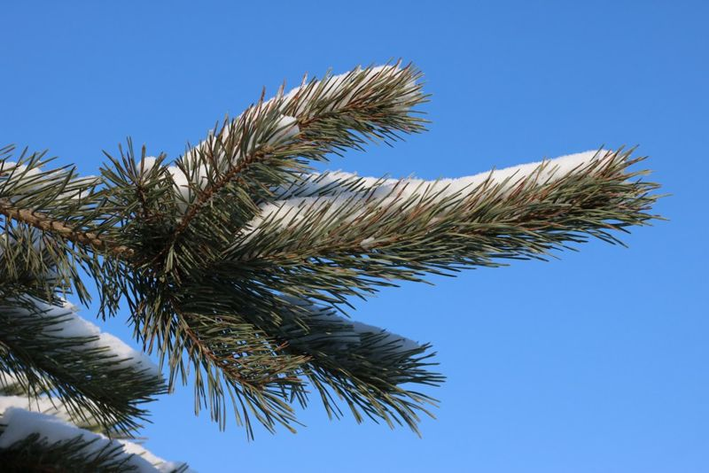
File:Pinus sylvestris 2026 G3.jpg
Autor: George Chernilevsky · CC BY 4.0 · Originál a licencia
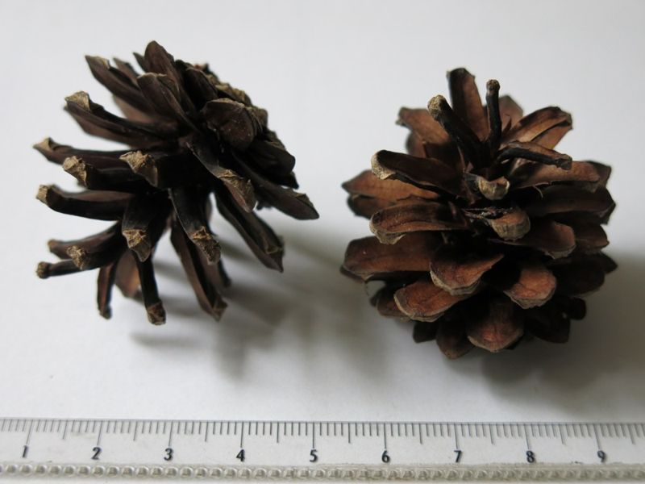
File:Cones of Pinus sylvestris, Parc de l'Aulnaye.jpg
Autor: Tangopaso · Public domain · Originál a licencia
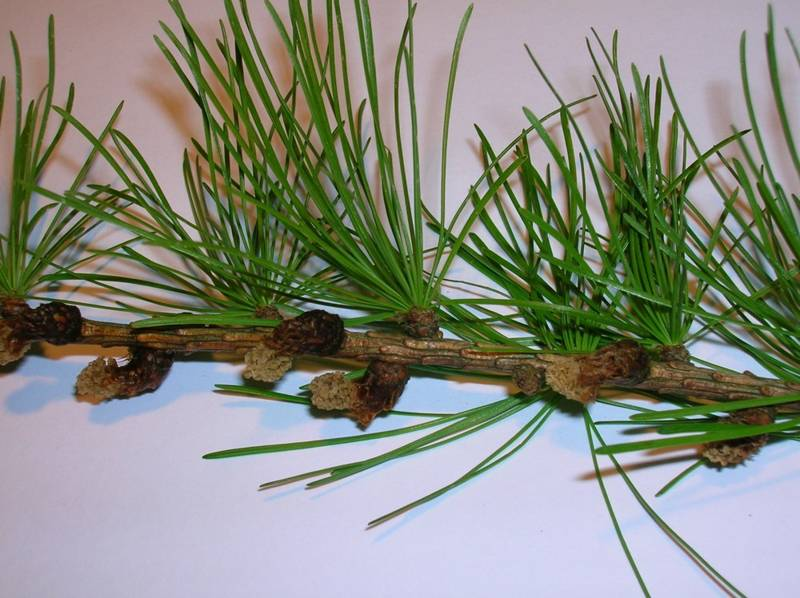
File:Larix decidua needles and male cones.JPG
Autor: Rosser1954 Roger Griffith · Public domain · Originál a licencia
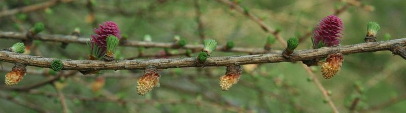
File:Larix decidua cones pl.jpg
Autor: pleple2000 · CC BY-SA 2.5 · Originál a licencia
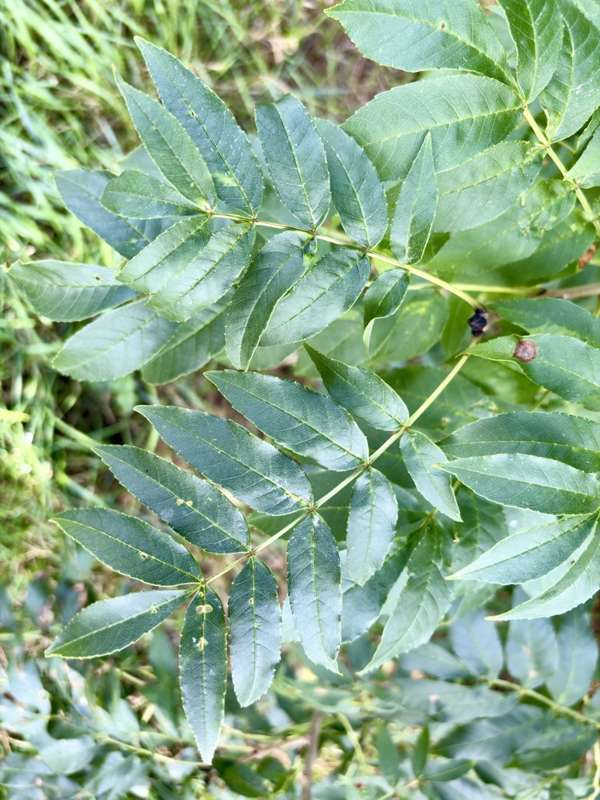
File:Fraxinus excelsior Lincolnshire 2026 Leaf.jpg
Autor: Kieran Roy Powell · CC BY 4.0 · Originál a licencia
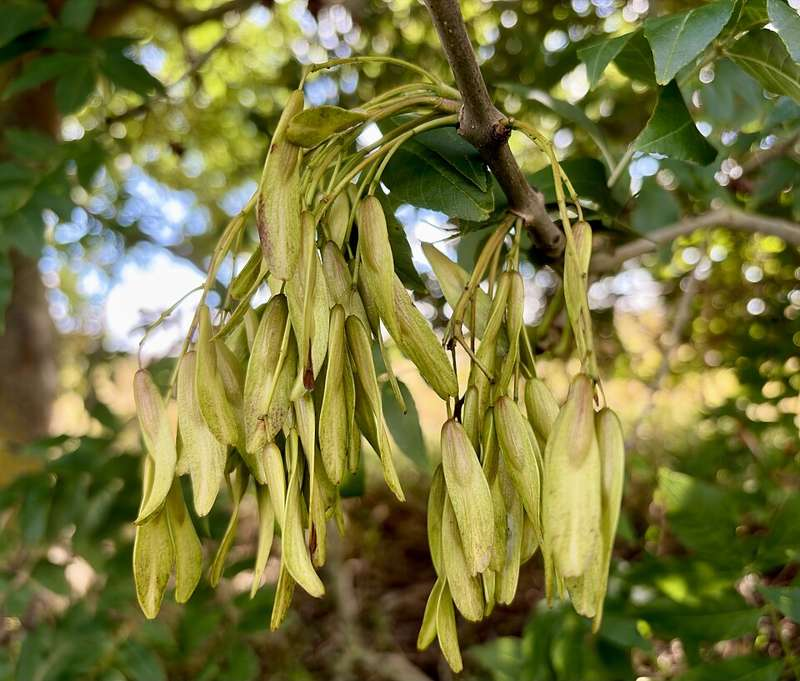
File:Fraxinus excelsior Lincolnshire 2026 Samara.jpg
Autor: Kieran Roy Powell · CC BY 4.0 · Originál a licencia
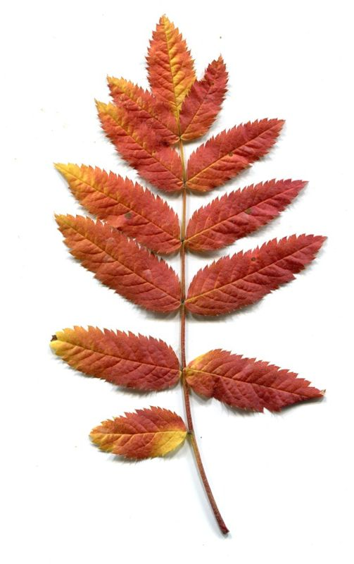
File:Autumn. Leaves - Sorbus aucuparia.jpg
Autor: Dmitry Makeev · CC BY-SA 4.0 · Originál a licencia
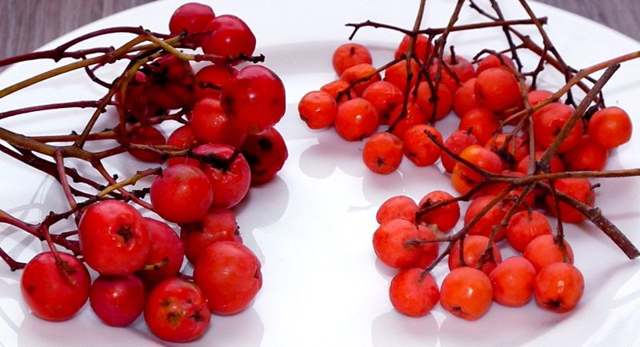
File:Sorbus aucuparia fruit comparison.jpg
Autor: Hekerui · CC0 · Originál a licencia


.jpg){kind=link}